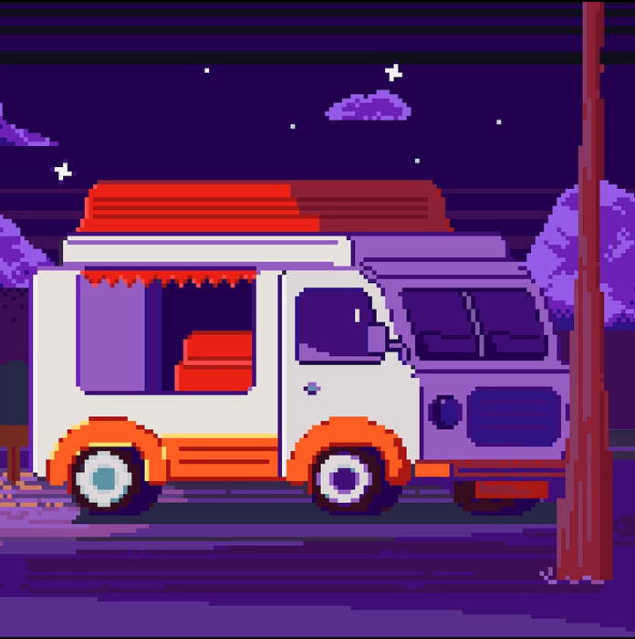

Фритрек: первые шаги
интерес

В начале всё казалось новым: незнакомые теги, странные свойства и много вопросов. Но было интересно пробовать и сразу видеть результат.
Постепенно страх перед пустым редактором сменился любопытством.